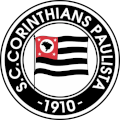
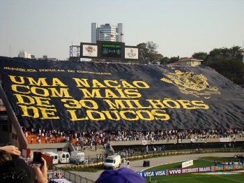

O Sport Club Corinthians Paulista foi fundado em 1º de setembro de 1910, no bairro do Bom Retiro, em São Paulo, por um grupo de trabalhadores. O clube nasceu inspirado no Corinthian Football Club, da Inglaterra, e rapidamente se tornou um dos clubes mais populares do Brasil. Ao longo de sua história, conquistou importantes títulos, como Mundiais de Clubes, Libertadores e Campeonatos Brasileiros, além de diversos títulos estaduais. Sua torcida é conhecida como Fiel Torcida, sendo uma das maiores e mais apaixonadas do país.
Os primeiros escudos do Corinthians

A torcida mais Fiel do Brsil
O termo "Fiel" se consolidou durante o jejum de 23 anos sem títulos (1954–1977). Em vez de se afastar, a torcida cresceu e lotou estádios, provando que o corintiano não vive de taças, mas sim de Corinthians. Em 1969, surgiu a Gaviões da Fiel, inovando o cenário nacional ao unir a festa na arquibancada com a cobrança política por transparência no clube.

A Fiel é famosa por cantar os 90 minutos seguidos, empurrando o time especialmente nos momentos de maior dificuldade e cantando ainda mais alto quando o time está perdendo. Essa paixão é capaz de mover multidões em invasões históricas, como os 70 mil torcedores que foram ao Maracanã em 1976 e os 30 mil que viajaram até o Japão no Mundial de 2012. Toda essa dedicação mantém viva a identidade operária e o espírito de resistência que nasceram com as raízes populares do clube.